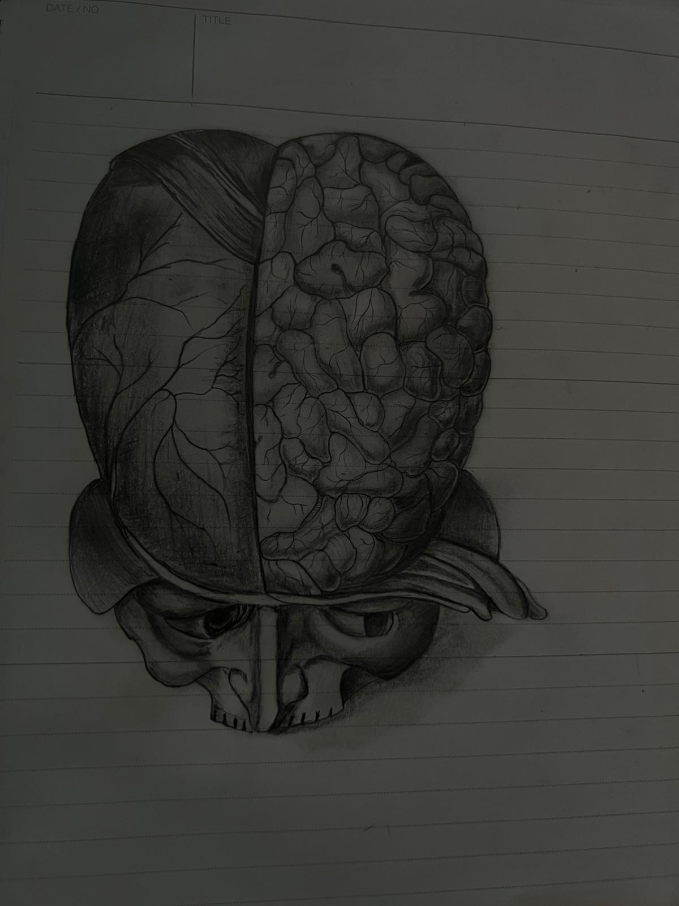

Edward
Windle
Working on decision theory, formal epistemology, and the philosophy of technology.

CV
Experience
Co-Founder
Bespoke data analytics.
Education
MSc, Philosophy of Science
BA, Philosophy
Writing
Latest2026
- Group Agency and Large-Scale Communication Technologies WiP. Paper
-
Brown-Nash-von Neumann and Smith Dynamics
Does the fact that the Brown-Nash-von Neumann dynamics, and the Smith dynamics, do not always eliminate strictly dominated strategies from the population show that the individual learning rules which yield them are irrational?. My answer: no.
Notes
- How does Polarisation affect the Quality of Evidence-Based Policy? I argue that political polarisation negatively affects the quality of evidence-based policy. Essay